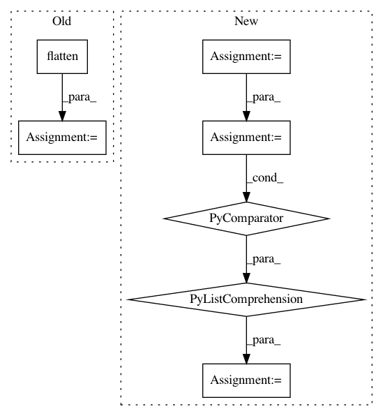

66268ffdc847e64216114871bd4169ad7872966a,snntoolbox/simulation/target_simulators/pyNN_target_sim.py,SNN,simulate,#SNN#,134
Before Change
def simulate(self, **kwargs):
if self._poisson_input:
rates = kwargs[str("x_b_l")].flatten()
for neuron_idx, neuron in enumerate(self.layers[0]):
neuron.rate = rates[neuron_idx] / self.rescale_fac * 1000
elif self._dataset_format == "aedat":
raise NotImplementedError
else:
constant_input_currents = kwargs[str("x_b_l")].flatten()
After Change
if self.data_format == "channels_last" and data.ndim == 4:
data = np.moveaxis(data, 3, 1)
x_flat = np.ravel(data)
if self._poisson_input:
self.layers[0].set(rate=list(x_flat / self.rescale_fac * 1000))
elif self._dataset_format == "aedat":
raise NotImplementedError
else:
spike_times = \
[np.linspace(0, self._duration, self._duration * amplitude)
for amplitude in x_flat]
self.layers[0].set(spike_times=spike_times)
self.sim.run(self._duration - self._dt,
callbacks=[MyProgressBar(self._dt, self._duration)])
In pattern: SUPERPATTERN
Frequency: 3
Non-data size: 7
Instances
Project Name: NeuromorphicProcessorProject/snn_toolbox
Commit Name: 66268ffdc847e64216114871bd4169ad7872966a
Time: 2019-04-11
Author: bodo.rueckauer@intel.com
File Name: snntoolbox/simulation/target_simulators/pyNN_target_sim.py
Class Name: SNN
Method Name: simulate
Project Name: explosion/thinc
Commit Name: 0db408d1eea2ce5c1d9b20fe61cb519e059d6cef
Time: 2017-09-15
Author: honnibal+gh@gmail.com
File Name: examples/basic_tagger.py
Class Name:
Method Name: main
Project Name: tensorflow/transform
Commit Name: 63455151483578a69b75197c2f7d880ff89a96a2
Time: 2020-04-24
Author: tf-transform-dev@google.com
File Name: tensorflow_transform/beam/impl.py
Class Name: _RunMetaGraphDoFn
Method Name: _get_passthrough_data_from_recordbatch